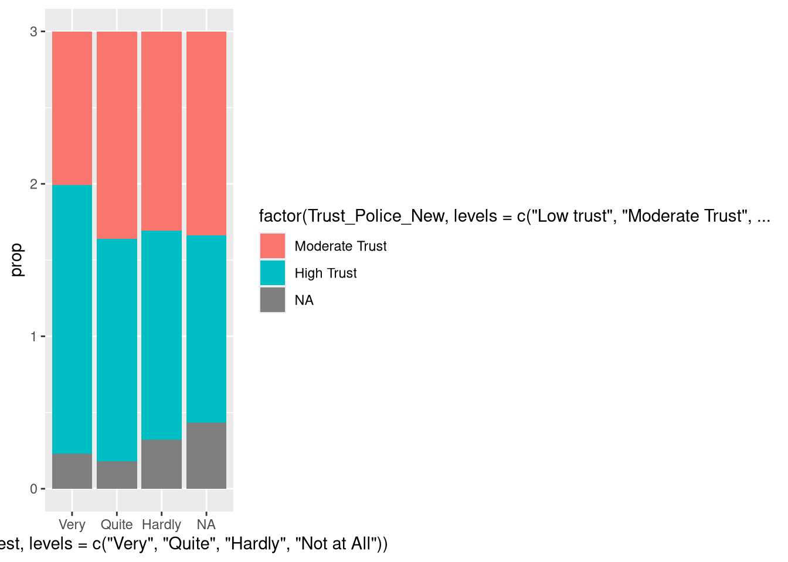
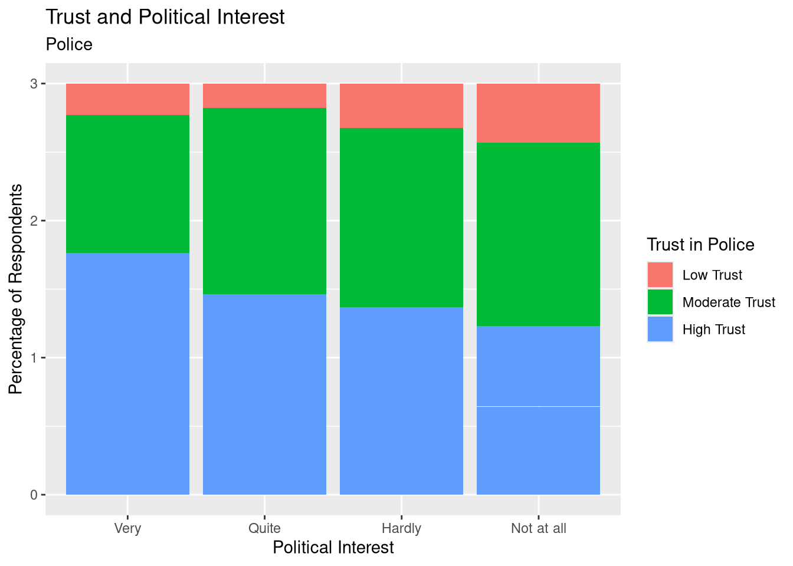
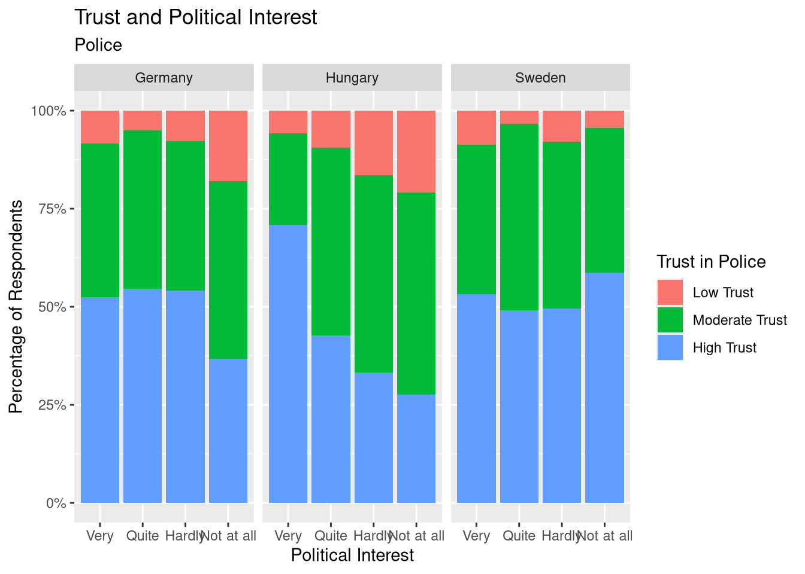
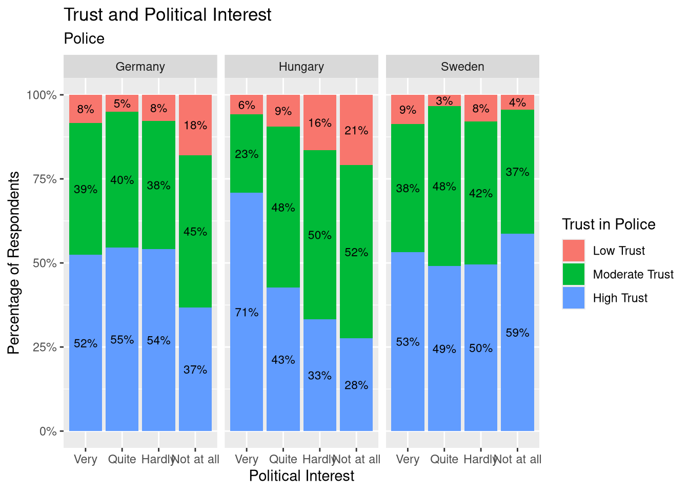
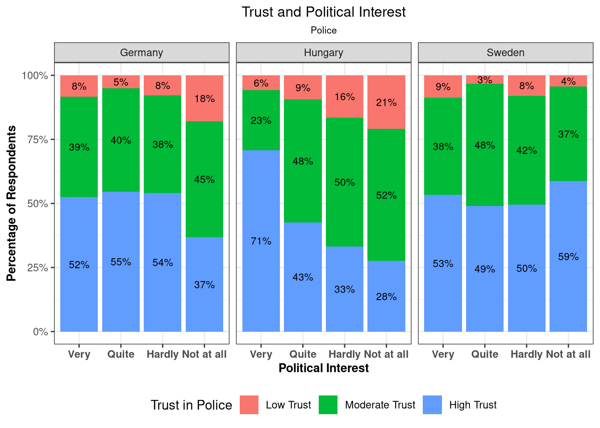
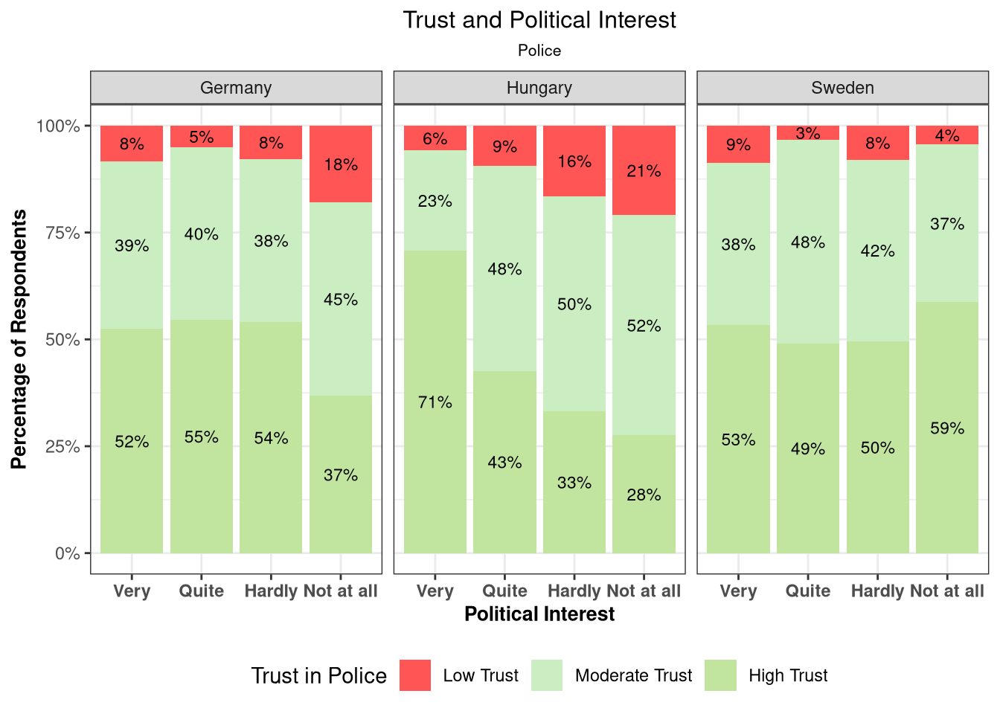
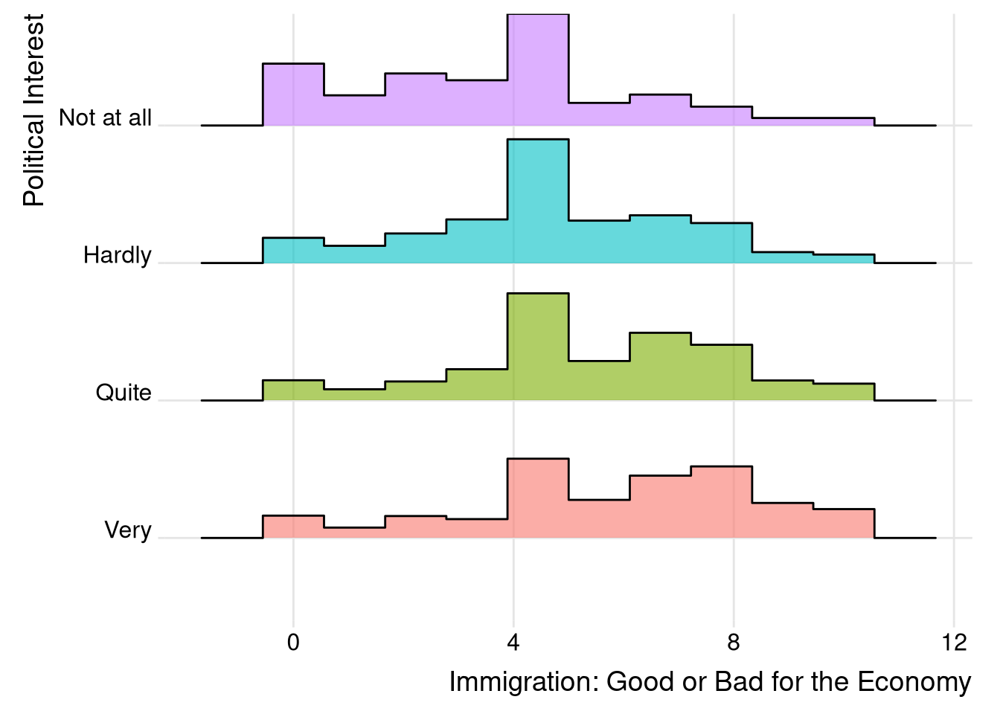
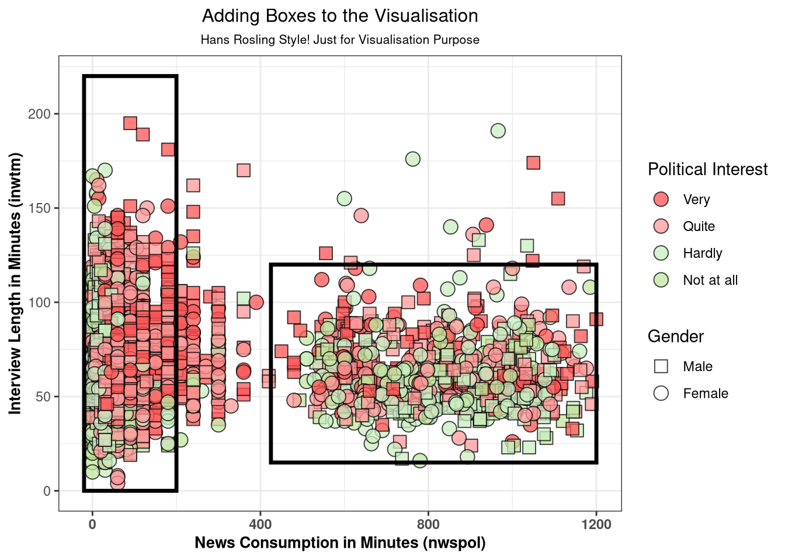
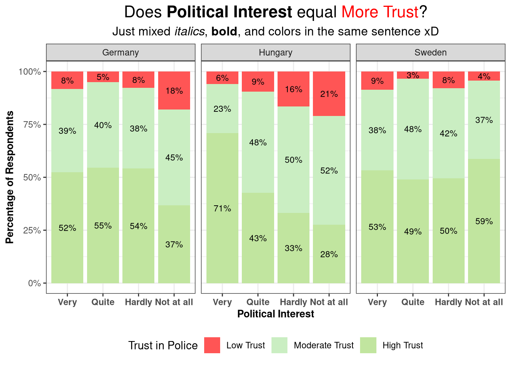
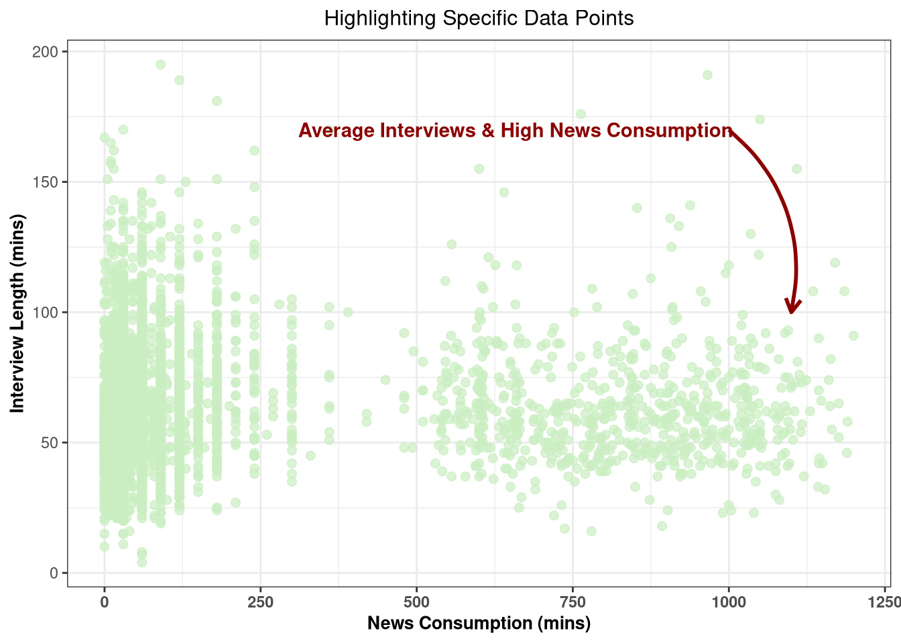

library(tidyverse)
library(scales)
library(patchwork)
# Filtering and mutating the raw dataset
ESS_Cleaned <- ESS_Subset %>%
filter(
agea < 100, # Remove 999 (No answer)
eduyrs <= 30, # Remove 77, 88, 99 codes
lrscale <= 10, # Remove 77, 88 codes
imwbcnt <= 10, # Remove 77, 88, 99 codes
imbgeco <= 10, # Remove 77, 88 codes
imueclt <= 10, # Remove 77, 88 codes
trstplc <= 10, # Remove 77, 88 codes
trstprl <= 10, # Remove 77, 88 codes
polintr <= 4 # Remove 7, 8 codes
) %>%
mutate(
Country = case_when(
cntry == "DE" ~ "Germany",
cntry == "HU" ~ "Hungary",
cntry == "SE" ~ "Sweden",
TRUE ~ cntry
),
Gender = factor(gndr, levels = c(1, 2), labels = c("Male", "Female")),
PolInterest = factor(polintr, levels = c(1, 2, 3, 4),
labels = c("Very", "Quite", "Hardly", "Not at all"))
)4 Exercise 4
4.1 Recap
In our previous session, we learned how to wrangle data using dplyr. We learnt to split the variables, filtered out missing values, recoded variables, and grouped our data to calculate proportions. Now, we are going to take that cleaned data and visualize it using ggplot2!!
The ggplot2 is the Grammar of Graphics. This means we build plots layer by layer starting with a blank canvas, adding our data shapes, and then refining the colors, labels, and themes!
4.1.1 Recap: Prepping Our Data
Before we can draw a plot, we need our data to be in the right shape. Sometimes we feed the entire dataset as it is and use only the columns of interest, but many times, we create new columns, summarise/group the data and ensure it is in the exact fomrat as how we would like to feed it to the ggplot() function. Here is a quick recap of the data wrangling we did to get our ESS data ready, can you understand this code?
Note: To start with this class, let us run all the commands in Exercise 1, to get the labels and load our existing dataset.
4.2 Recap: Creating the Trust Variables and Prop Calculations
Here we create categorical variables for trust in the police and parliament. We then calculate the percentage of respondents in each trust category, grouped by Country and Political Interest. We use the mutate(), case_when(), group_by(), summarise() and n() functions in this case.
# Making the new "Trust" Variables
ESS_Cleaned <- ESS_Cleaned %>%
mutate(Trust_Police_New = case_when(
trstplc %in% c(0,1,2,3) ~ "Low Trust",
trstplc %in% c(4,5,6,7) ~ "Moderate Trust",
trstplc %in% c(8,9,10) ~ "High Trust",
TRUE ~ NA_character_
)) %>%
mutate(Trust_Parli_New = case_when(
trstprl %in% c(0,1,2,3) ~ "Low Trust",
trstprl %in% c(4,5,6,7) ~ "Moderate Trust",
trstprl %in% c(8,9,10) ~ "High Trust",
TRUE ~ NA_character_
))
# Aggregating data for the Police Trust plot
PolTrust <- ESS_Cleaned %>%
dplyr::select(Trust_Police_New, PolInterest, Country) %>%
na.omit() %>%
group_by(Trust_Police_New, PolInterest, Country) %>%
summarise(n = n(), .groups = "drop") %>%
group_by(Country, PolInterest) %>%
mutate(prop = n / sum(n))
ParTrust <- ESS_Cleaned %>%
dplyr::select(Trust_Parli_New, PolInterest, Country) %>%
na.omit() %>%
group_by(Trust_Parli_New, PolInterest, Country) %>%
summarise(n = n(), .groups = "drop") %>%
group_by(Country, PolInterest) %>%
mutate(prop = n / sum(n))Question
Why .groups = "drop"?
When dplyr (the library from tidyverse which contains the functions to do the data wrangling) summarises grouped data, it keeps the last grouping variable information, i.e., it moves from one pipe (%>%) to another with all the information intact. If you didn’t drop the groups, your resulting data would still be grouped by the same variables. By using .groups = "drop", you are wiping the slate clean. The resulting dataframe is completely ungrouped, which prevents accidental math errors in the next steps.
4.3 Let us start with ggplot2!
Now for the fun part. We are going to build our first plot (p1), which visualizes trust in the police! We will do this by adding one layer at a time.
4.3.1 Layer 1: Blank Canvas
Every ggplot starts with the ggplot() function.
ggplot()
Simply running the ggplot(), we get a blank grey canvas. This is where we start working from and adding the next layer
4.3.2 Layer 2: Adding x,y variables
Here, we define the dataset (PolTrust) and the aesthetics (aes()). Aesthetics map variables in our data to visual properties (x-axis, y-axis, and fill colors).
Notice that when we run this, no bars appear yet. It just sets up the grid based on our axes! We can now see our x-axis and y-axis labels.
4.3.3 Layer 3: geom_col()
Our graph is still meaningless and incorrect, as the proportions we calculated are based on the trust in police varibale; however, with the geom_col() command, we can now see some column being drawn on the graph!
Tip!
Tip: Try typing just geom_ and look at the suggestions! You will be able to see all the graphs you can generate in ggplot2 alone! Remember there are always more libraries and many libraries which use ggplot itself, for even more cooler visualizations!
Refer to this link to check what each does: Tidyverse-GGplot2 documentation and this link too: GGplot2 Cheat Sheet
4.3.4 Layer 4: Adding the fill!
Since we are starting of with a stacked bar graph, the fill layer is very important, i.e., what is each stack in the bar actually demonstrating. We finally have a graph which is starting to make sense and is visualising the data!
4.3.5 Layer 5: Ordering
If you notice in the graph, the factors (High Trust, Low Trust and Moderate Trust) are all jumbled! It is not flowing from Low-High or High-Low. The same is not true for the “Political Interest” variables: they are ordered correctly. However, we can define thier order too. Let us make correct the order.

Notice what happens now: Since we have not specified the title, legend etc., they take the code along with it for the legend. There is also a mistake in one of the political interest and trust_police variables. Notice how such mistakes change the graph! (The y axis is still wrong, we will correct it in layer 8)
4.3.6 Layer 6 Adding the Title and other labels
PolTrust %>%
ggplot(aes(x = factor(PolInterest, levels = c("Very", "Quite", "Hardly","Not at all")),
y = prop,
fill = factor(Trust_Police_New, levels = c("Low Trust", "Moderate Trust", "High Trust")))) +
geom_col()+
labs(
x = "Political Interest",
y = "Percentage of Respondents",
title = "Trust and Political Interest",
subtitle = "Police",
fill = 'Trust in Police'
)
Perfect! It is already starting to look great! We have the basic graph ready! We can already start interpreting what is happening. But, there are still many aesthetic changes we can make. First, since we are also interested in the differences between countries, let us add the 3 countries. For this, we can use facetting()
4.3.7 Layer 7: Facetting
PolTrust %>%
ggplot(aes(x = factor(PolInterest, levels = c("Very", "Quite", "Hardly","Not at all")),
y = prop,
fill = factor(Trust_Police_New, levels = c("Low Trust", "Moderate Trust", "High Trust")))) +
geom_col()+
labs(
x = "Political Interest",
y = "Percentage of Respondents",
title = "Trust and Political Interest",
subtitle = "Police",
fill = 'Trust in Police'
) +
facet_wrap(~ Country)Great! We now have division between countries! Notice how the y-axis starts to make more sense now. Since this data was prepared for faceting in the future, when we did not facet the data, it was adding the proportions of the 3 countries together, hence resulting in a total sum of 3. The axis is still not perfect. We need to convert it into percentage. Let us also add the percentage sign, so it is more clear.
4.3.8 Layer 8: Percentage in Y axis
Right now, the Y-axis shows decimals (0.25, 0.50). We can fix this with scale_y_continuous() function and the scales() function from the scales() library.
PolTrust %>%
ggplot(aes(x = factor(PolInterest, levels = c("Very", "Quite", "Hardly","Not at all")),
y = prop,
fill = factor(Trust_Police_New, levels = c("Low Trust", "Moderate Trust", "High Trust")))) +
scale_y_continuous(labels = scales::percent) +
geom_col()+
labs(
x = "Political Interest",
y = "Percentage of Respondents",
title = "Trust and Political Interest",
subtitle = "Police",
fill = 'Trust in Police'
) +
facet_wrap(~ Country)
4.3.9 Layer 9: Adding Text Labels
Perfect! the bars are great, but exact numbers make the chart easier to read. We add geom_text() to place the percentage labels directly onto the bars. We use position_stack(vjust = 0.5) to center the text inside each colored block. Try changing the values to different numbers to check what happens!
PolTrust %>%
ggplot(aes(x = factor(PolInterest, levels = c("Very", "Quite", "Hardly","Not at all")),
y = prop,
fill = factor(Trust_Police_New, levels = c("Low Trust", "Moderate Trust", "High Trust")))) +
scale_y_continuous(labels = scales::percent) +
geom_col()+
geom_text(aes(label = scales::percent(prop, accuracy = 1)),
position = position_stack(vjust = 0.5),
size = 3) +
labs(
x = "Political Interest",
y = "Percentage of Respondents",
title = "Trust and Political Interest",
subtitle = "Police",
fill = 'Trust in Police'
) +
facet_wrap(~ Country)
4.3.10 Layer 10: Final Aesthetics Code
Yay! The bars are now much easier to read! Lets just add some final touch ups and play around with different themes. I have a prepared theme which I use for the alignment of the titles, making labels bold etc. I have shared that theme here as well. Let us use it! I also use the theme_bw all the time. You can try out some different themes to check out what happens!
# Viz Theme
theme_graphs <- theme(
axis.text.x = element_text(face = "bold"),
axis.title.x = element_text(color = "black", size = 10, face = "bold"),
axis.title.y = element_text(color = "black", size = 10, face = "bold"),
plot.title = element_text(color = "black", size = 12, hjust = 0.5),
plot.subtitle = element_text(color = "black", size = 8, hjust = 0.5),
plot.caption = element_text(face = "italic"),
legend.position = 'bottom'
)
PolTrust %>%
ggplot(aes(x = factor(PolInterest, levels = c("Very", "Quite", "Hardly","Not at all")),
y = prop,
fill = factor(Trust_Police_New, levels = c("Low Trust", "Moderate Trust", "High Trust")))) +
scale_y_continuous(labels = scales::percent) +
geom_col()+
geom_text(aes(label = scales::percent(prop, accuracy = 1)),
position = position_stack(vjust = 0.5),
size = 3) +
labs(
x = "Political Interest",
y = "Percentage of Respondents",
title = "Trust and Political Interest",
subtitle = "Police",
fill = 'Trust in Police'
) +
facet_wrap(~ Country) +
theme_bw() +
theme_graphs
4.3.11 Layer 11: Changing color
To change the color from the default ones, we can use the scale_fill_manual() to specify exact hex codes for this. Remember that if you use something instead of fill(), for example color, to define what different colors mean in the plot, you must use the corresponding scale, in the case of color, it will be scale_color_manual()
# Viz Theme
theme_graphs <- theme(
axis.text.x = element_text(face = "bold"),
axis.title.x = element_text(color = "black", size = 10, face = "bold"),
axis.title.y = element_text(color = "black", size = 10, face = "bold"),
plot.title = element_text(color = "black", size = 12, hjust = 0.5),
plot.subtitle = element_text(color = "black", size = 8, hjust = 0.5),
plot.caption = element_text(face = "italic"),
legend.position = 'bottom'
)
PolTrust %>%
ggplot(aes(x = factor(PolInterest, levels = c("Very", "Quite", "Hardly","Not at all")),
y = prop,
fill = factor(Trust_Police_New, levels = c("Low Trust", "Moderate Trust", "High Trust")))) +
scale_y_continuous(labels = scales::percent) +
geom_col()+
scale_fill_manual(values=c('#FF5555','#CAEEC2','#C1E59F')) +
geom_text(aes(label = scales::percent(prop, accuracy = 1)),
position = position_stack(vjust = 0.5),
size = 3) +
labs(
x = "Political Interest",
y = "Percentage of Respondents",
title = "Trust and Political Interest",
subtitle = "Police",
fill = 'Trust in Police'
) +
facet_wrap(~ Country) +
theme_bw() +
theme_graphs
4.3.12 Layer 12: Patchwork
Now that we understand the layers, we can easily generate a second plot (p2) for Trust in Parliament, using the exact same structure. Instead of showing these two plots separately, we can stack them using the patchwork library. By simply using the / division operator, R knows we want p1 on top of p2.
p1 <- ggplot(PolTrust,
aes(x = factor(PolInterest),
y = prop,
fill = factor(Trust_Police_New, levels = c("Low Trust", "Moderate Trust", "High Trust")))) +
geom_col() +
geom_text(aes(label = scales::percent(prop, accuracy = 1)),
position = position_stack(vjust = 0.5),
size = 3) +
scale_y_continuous(labels = scales::percent) +
labs(
x = "",
y = "Percentage of Respondents",
title = "Trust and Political Interest",
subtitle = "Police",
fill = 'Trust in Police'
) +
scale_fill_manual(values=c('#FF5555','#CAEEC2','#C1E59F')) +
theme_bw() +
theme_graphs +
theme(#axis.text.x = element_text(angle = 360, vjust = 1, hjust = 1),
legend.position = "none") +
facet_wrap(~ Country)
p2 <- ggplot(ParTrust,
aes(x = factor(PolInterest),
y = prop,
fill = factor(Trust_Parli_New, levels = c("Low Trust", "Moderate Trust", "High Trust")))) +
geom_col() +
geom_text(aes(label = scales::percent(prop, accuracy = 1)),
position = position_stack(vjust = 0.5),
size = 3) +
scale_y_continuous(labels = scales::percent) +
labs(
x = "Political Interest",
y = "Percentage of Respondents",
subtitle = "Parliament",
fill = 'Trust in Parliament'
) +
scale_fill_manual(values=c('#FF5555','#CAEEC2','#C1E59F')) +
theme_bw() +
theme_graphs +
#theme(axis.text.x = element_text(angle = 360, vjust = 1, hjust = 1)) +
facet_wrap(~ Country)Independent Tasks: ggplot2 & dplyr
T1: Change titles and source captions. ⬜
T2: Apply a new color palette (Viridis) or manually add hex codes. ⬜
T3: Test theme_minimal() and theme_classic() and other themes. ⬜
T4: Move legend to the right and unhide in p1. ⬜
T5: Flip coordinates (coord_flip()) ⬜
T6: Change facet layout (grid vs. single-column wrap). ⬜
T7: Recode Trust into two categories instead of three. ⬜
T8: Filter for Female respondents and update plots. ⬜
T9: Make new plots and arrange the plots side-by-side
4.4 Some other Visualisations
4.4.1 Ridgeline plot
library(ggridges)
library(ggplot2)
library(dplyr)
library(tidyr)
library(forcats)
ESS_Cleaned %>%
ggplot(aes(x = imbgeco, y = factor(PolInterest), fill = factor(PolInterest))) +
geom_density_ridges(alpha = 0.6, stat = "binline", bins = 10, scale = 0.9) +
theme_ridges() +
theme(
legend.position = "none",
panel.spacing = unit(0.1, "lines"),
strip.text.x = element_text(size = 6)
) +
xlab("Immigration: Good or Bad for the Economy") +
ylab("Political Interest")
4.4.2 Hans Rosling Style Plots
ESS_Cleaned <- ESS_Cleaned %>%
filter(inwtm < 200,
nwspol < 3000)
ggplot(ESS_Cleaned, aes(x = nwspol, y = inwtm)) +
geom_point(
aes(fill = PolInterest, shape = Gender),
size = 4,
alpha = 0.75,
colour = "black"
) +
scale_shape_manual(values = c(Female = 21, Male = 22)) +
scale_fill_manual(values = c("#FF5555", "#FF9999", "#CAEEC2", "#C1E59F")) +
annotate(
"rect",
xmin = -20, xmax = 200,
ymin = 0, ymax = 220,
fill = NA, colour = "black", linewidth = 1.2
) +
annotate(
"rect",
xmin = 425, xmax = 1200,
ymin = 15, ymax = 120,
fill = NA, colour = "black", linewidth = 1.2
) +
labs(
x = "News Consumption in Minutes (nwspol)",
y = "Interview Length in Minutes (inwtm)",
title = 'Adding Boxes to the Visualisation',
subtitle = "Hans Rosling Style! Just for Visualisation Purpose",
fill = "Political Interest",
shape = "Gender"
) +
theme_bw() +
theme_graphs +
theme(legend.position = 'right') +
guides(fill = guide_legend(override.aes = list(shape = 21)))
4.4.3 Adding text/arrows in a plot
library(ggtext)
theme_graphs <- theme(
axis.text.x = element_text(face = "bold"),
axis.title.x = element_text(color = "black", size = 10, face = "bold"),
axis.title.y = element_text(color = "black", size = 10, face = "bold"),
plot.title = element_text(color = "black", size = 12, hjust = 0.5),
plot.subtitle = element_text(color = "black", size = 8, hjust = 0.5),
plot.caption = element_text(face = "italic"),
legend.position = 'bottom'
)
PolTrust %>%
ggplot(aes(x = factor(PolInterest, levels = c("Very", "Quite", "Hardly","Not at all")),
y = prop,
fill = factor(Trust_Police_New, levels = c("Low Trust", "Moderate Trust", "High Trust")))) +
scale_y_continuous(labels = scales::percent) +
geom_col()+
scale_fill_manual(values=c('#FF5555','#CAEEC2','#C1E59F')) +
geom_text(aes(label = scales::percent(prop, accuracy = 1)),
position = position_stack(vjust = 0.5),
size = 3) +
labs(
x = "Political Interest",
y = "Percentage of Respondents",
title = "Does **Political Interest** equal <span style='color:red;'>More Trust</span>?",
subtitle = "Just mixed *italics*, **bold**, and colors in the same sentence xD",
fill = 'Trust in Police'
) +
facet_wrap(~ Country) +
theme_bw() +
theme_graphs +
theme(
# We MUST tell the theme to render the text as Markdown!
plot.title = element_markdown(size = 16),
plot.subtitle = element_markdown(size = 12)
)
library(ggplot2)
ggplot(ESS_Cleaned, aes(x = nwspol, y = inwtm)) +
geom_point(alpha = 0.7, color = "#CAEEC2", size = 2) +
annotate(
"text",
x = 667, y = 170,
label = "Average Interviews & High News Consumption ",
fontface = "bold",
color = "darkred"
) +
annotate(
"curve",
x = 1000, y = 170, # Arrow start
xend = 1100, yend = 100, # Arrow end
arrow = arrow(length = unit(0.3, "cm")),
curvature = -0.3,
color = "darkred",
linewidth = 1
) +
labs(
x = "News Consumption (mins)",
y = "Interview Length (mins)",
title = "Highlighting Specific Data Points"
) +
theme_bw()+
theme_graphs
4.4.4 For the Future
Want to continue having fun making cool visualizations? Check out the ggpattern page! or refer to this channel for more ideas: Albert Rapp.
These books have a good guide to what we are doing in class too:
4.5 Draw your own Graph!
Exercise 3: Draw Your Own Graph! 🎨
Let us step away from the keyboard! Look at your data, grab some paper (and colors!), and sketch what you want to build. Then, make it in R. I have some highlighters, different color pens and markers to help you!
T1: Sketch your ideal plot on paper first. ⬜
T2: Identify the variables and filter/clean your data in R. ⬜
T3: Build the base plot using your chosen geoms (points, ridges, etc.). ⬜
T4: Add an annotation (arrow + text) if needed to highlight a specific data point. ⬜
5 Making Tables
Visualizations are incredibly powerful, but sometimes you need to display exact numbers, data dictionaries, or descriptive statistics. Standard R console output isn’t exactly pretty. To fix this, we use the kableExtra package to build highly customized, HTML-formatted tables that look fantastic in your RMarkdown reports!
5.0.1 Table 1: Missing & Unique Values
Before running complex models, you always want to know the “health” of your data. Let’s create a table that counts missing and unique values for every variable, and use a color gradient to highlight variables with the most missing data!
library(kableExtra)
library(tidyverse)
missing_data <- ESS_Cleaned %>%
summarise(across(everything(), ~ sum(is.na(.)))) %>%
pivot_longer(everything(),
names_to = "variable",
values_to = "n_missing")
unique_data <- ESS_Cleaned %>%
summarise(across(everything(), ~ n_distinct(.))) %>%
pivot_longer(everything(),
names_to = "variable",
values_to = "n_unique")
tab1 <- missing_data %>%
left_join(unique_data, by = "variable")
# For fun, sometimes useful: create a conditional color scheme
col_fun <- scales::col_numeric(
palette = c("white", "#CAEEC2"),
domain = range(tab1$n_missing, na.rm = TRUE)
)
colnames(tab1) <- c('Variable Name', 'Missing Obs.', 'Unique Obs.')
# build the styled HTML table
tab_styled <- tab1 %>%
kbl(
booktabs = TRUE,
caption = "Summary of Missing and Unique Data",
format = "html",
full_width = FALSE
) %>%
kable_styling(
bootstrap_options = c("striped", "hover", "condensed"),
latex_options = c("hold_position")
) %>%
column_spec(
column = which(names(tab1) == "Missing Obs."),
background = col_fun(tab1$`Missing Obs.`) # Apply the color gradient!
)
tab_styled| Variable Name | Missing Obs. | Unique Obs. |
|---|---|---|
| name | 0 | 1 |
| essround | 0 | 1 |
| edition | 0 | 1 |
| proddate | 0 | 1 |
| idno | 0 | 4803 |
| cntry | 0 | 3 |
| dweight | 0 | 176 |
| pspwght | 0 | 1178 |
| pweight | 0 | 3 |
| anweight | 0 | 1178 |
| nwspol | 0 | 445 |
| polintr | 0 | 4 |
| trstprl | 0 | 11 |
| trstplc | 0 | 11 |
| lrscale | 0 | 11 |
| imbgeco | 0 | 11 |
| imueclt | 0 | 11 |
| imwbcnt | 0 | 11 |
| gndr | 0 | 2 |
| agea | 0 | 76 |
| eduyrs | 0 | 29 |
| inwds | 0 | 4976 |
| ainws | 0 | 4973 |
| ainwe | 0 | 4972 |
| binwe | 0 | 4971 |
| inwtm | 0 | 151 |
| prob | 0 | 175 |
| stratum | 0 | 173 |
| psu | 0 | 2444 |
| Country | 0 | 3 |
| Gender | 0 | 2 |
| PolInterest | 0 | 4 |
| Trust_Police_New | 0 | 3 |
| Trust_Parli_New | 0 | 3 |
5.0.2 Table 2: Descriptive Stats
desc_stats <- ESS_Cleaned %>%
select(where(is.numeric)) %>% # Taking only numeric cols
select(-idno) %>% # Remove the ID number
pivot_longer(everything(), names_to = "Variable", values_to = "Value") %>%
drop_na() %>%
group_by(Variable) %>%
summarise(
N = n(),
Mean = round(mean(Value), 2),
SD = round(sd(Value), 2),
Median = round(median(Value),2),
Min = round(min(Value),2),
Max = round(max(Value),2)
) %>%
arrange(Variable)
desc_stats %>%
kbl(
booktabs = TRUE,
caption = "Descriptive Statistics for Numeric Variables",
format = "html",
align = c("l", "c", "c", "c", "c", "c", "c")
) %>%
kable_styling(
bootstrap_options = c("striped", "hover", "condensed"),
full_width = FALSE,
position = "center"
) %>%
row_spec(0, bold = TRUE, color = "white", background = "#FF5555") %>%
column_spec(1, bold = TRUE) %>% # Bold variable names
footnote(
general = "Data source: European Social Survey (ESS).",
general_title = ""
)| Variable | N | Mean | SD | Median | Min | Max |
|---|---|---|---|---|---|---|
| agea | 4977 | 51.40 | 18.68 | 53.00 | 15.00 | 90.00 |
| anweight | 4977 | 1.60 | 2.60 | 0.63 | 0.11 | 13.00 |
| dweight | 4977 | 1.00 | 0.14 | 1.00 | 0.78 | 1.77 |
| edition | 4977 | 4.10 | 0.00 | 4.10 | 4.10 | 4.10 |
| eduyrs | 4977 | 13.64 | 3.43 | 13.00 | 0.00 | 30.00 |
| essround | 4977 | 11.00 | 0.00 | 11.00 | 11.00 | 11.00 |
| gndr | 4977 | 1.52 | 0.50 | 2.00 | 1.00 | 2.00 |
| imbgeco | 4977 | 5.22 | 2.63 | 5.00 | 0.00 | 10.00 |
| imueclt | 4977 | 5.48 | 2.67 | 6.00 | 0.00 | 10.00 |
| imwbcnt | 4977 | 5.03 | 2.44 | 5.00 | 0.00 | 10.00 |
| inwtm | 4977 | 64.05 | 20.86 | 62.00 | 4.00 | 195.00 |
| lrscale | 4977 | 5.00 | 2.31 | 5.00 | 0.00 | 10.00 |
| nwspol | 4977 | 168.64 | 278.96 | 60.00 | 0.00 | 1200.00 |
| polintr | 4977 | 2.32 | 0.91 | 2.00 | 1.00 | 4.00 |
| prob | 4977 | 0.00 | 0.00 | 0.00 | 0.00 | 0.00 |
| pspwght | 4977 | 0.99 | 0.87 | 0.78 | 0.12 | 4.34 |
| psu | 4977 | 12191.81 | 7109.28 | 12809.00 | 5432.00 | 24391.00 |
| pweight | 4977 | 1.62 | 1.24 | 0.71 | 0.39 | 2.99 |
| stratum | 4977 | 716.01 | 440.12 | 786.00 | 270.00 | 1405.00 |
| trstplc | 4977 | 6.88 | 2.23 | 7.00 | 0.00 | 10.00 |
| trstprl | 4977 | 5.26 | 2.69 | 5.00 | 0.00 | 10.00 |
| Data source: European Social Survey (ESS). |